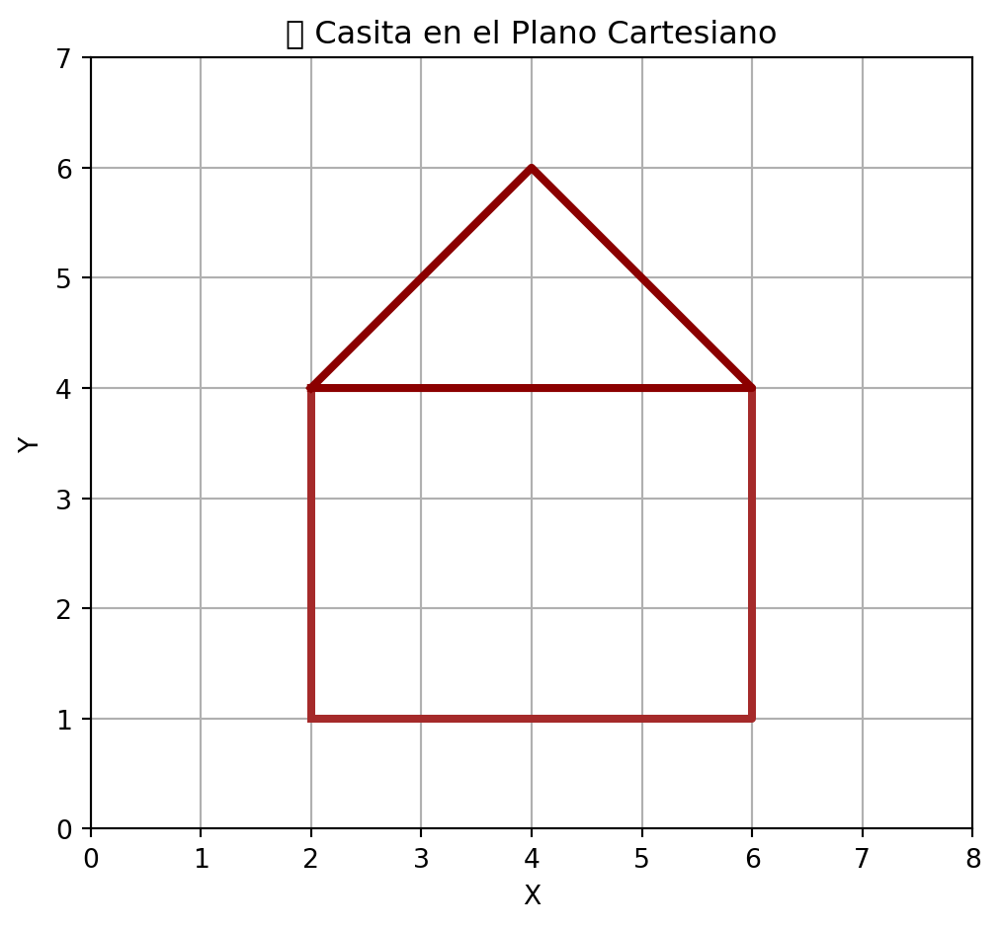
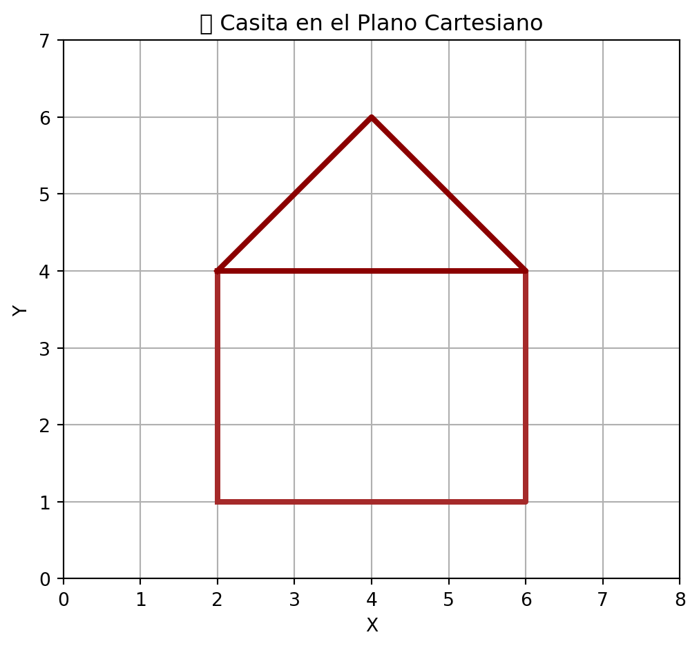
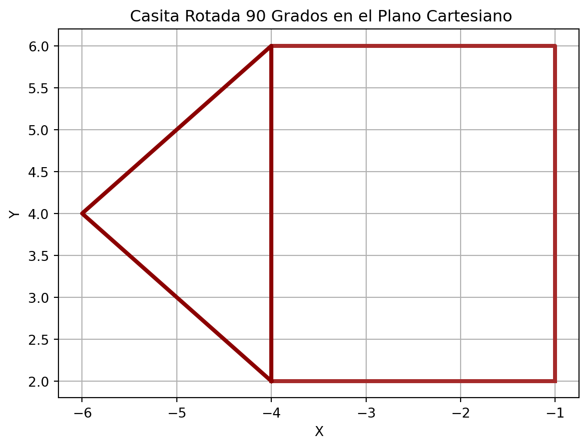

/home/user/miniforge3/envs/class/lib/python3.12/site-packages/IPython/core/pylabtools.py:170: UserWarning: Glyph 127968 (\N{HOUSE BUILDING}) missing from current font.
fig.canvas.print_figure(bytes_io, **kw)
\[ A = \begin{bmatrix} 2 & a \\ 3 & 4 \end{bmatrix} \] en función de \(a\). Analiza los casos en los que los valores propios sean reales o complejos.
\[ B = \begin{bmatrix} 5 & -2 \\ 1 & 3 \end{bmatrix} \] Calcula sus valores propios y usa ese resultado para encontrar \(B^n\) sin multiplicaciones sucesivas.
\[ C = \begin{bmatrix} 1 & 2 \\ 3 & 4 \end{bmatrix}, \quad D = \begin{bmatrix} 2 & 0 \\ 0 & 3 \end{bmatrix} \] ¿Se cumple que los valores propios de \(C+D\) son la suma de los valores propios de \(C\) y \(D\)?
Encuentra una matriz no nula \(A\) con un valor propio igual a cero. Interpreta geométricamente su efecto sobre los vectores.
\[ \text{traza}(A) = \lambda_1 + \lambda_2, \quad \det(A) = \lambda_1 \lambda_2. \]
a. 1 Valores propio real.
b. 2 Valores propios reales distintos.
c. Valores propios complejos.En economía, los precios de bienes y servicios están interconectados. Por ejemplo, el precio de los metales afecta el costo de fabricación de automóviles, y el precio de la energía impacta la producción industrial.
Imaginemos un modelo simplificado de dos sectores económicos:
Cada periodo, los precios en estos sectores cambian en función de la oferta y la demanda, siguiendo la matriz de transición de precios:
\[ P_{n+1} = A P_n \]
donde \(P_n\) representa los precios en el periodo \(n\) y la matriz de influencia \(A\) es:
\[ A = \begin{bmatrix} 0.8 & 0.3 \\ 0.2 & 0.7 \end{bmatrix} \]
Cada entrada de \(A\) indica cómo el precio de un sector influye en sí mismo y en el otro sector.
Si \(A\) es una matriz simétrica, entonces sus valores propios son reales.
Si el sistema \(Ax=b\) tiene infinitas soluciones entonces \(A\) tiene un valor propio igual a cero.
Si una matriz es diagonalizable, entonces sus valores propios son reales.
Si \(A\) tiene un valor propio igual a cero, entonces \(A^{-1}\) no existe.
Si \(A\) tiene un valor propio igual a cero y otro diferente, entonces \(A\) es no es diagonalizable.
Observa la figura que se forma al unir los puntos en el plano cartesiano.
/home/user/miniforge3/envs/class/lib/python3.12/site-packages/IPython/core/pylabtools.py:170: UserWarning: Glyph 127968 (\N{HOUSE BUILDING}) missing from current font.
fig.canvas.print_figure(bytes_io, **kw)
Esta figura se rota como se muestra en la siguiente gráfica.

Encuentre la matriz de rotación que se utilizó para rotar la figura.